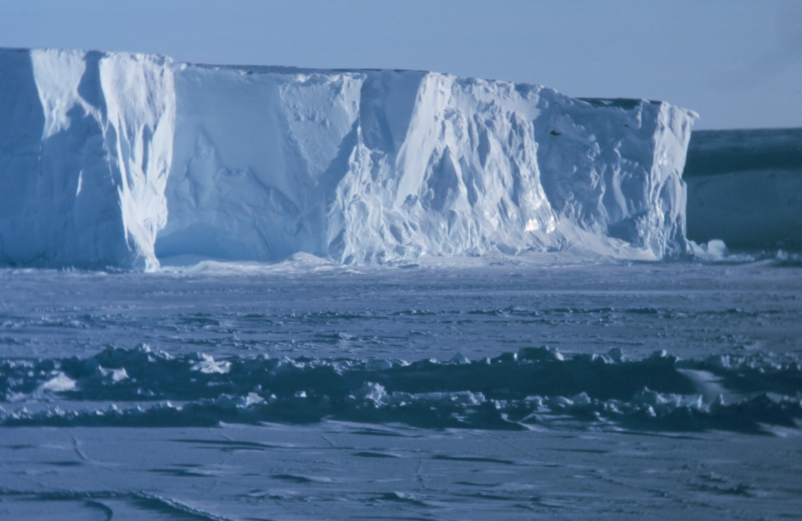
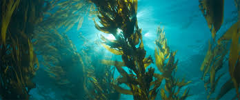

Antarctic Ice Sheet Sensitive to Higher Ocean Temperatures
By Arthur Curry
18 August 2018

Melting of ice shelves in West Antarctica speeds up and slows down in response to changes in deep ocean temperature, and is far more variable than previously thought, according to new research.
Starfish Important to Health of Kelp Forests
By Arthur Curry
18 August 2018

A study by a resource and environmental management researcher reveals that sunflower sea stars play a critical role in the resilience of B.C.'s kelp forests, which are among the most productive ecosystems on Earth. Similar to land-based forests, kelp forests provide essential habitat for species and also help remove CO2 from the atmosphere.